Criei esse Instagram para perder o medo de ser autêntico (ou estranho, como alguns dizem🤣) Ter coragem de postar conteúdo: sem filtro, sem ter que parecer profissional, e sem julgamento de conhecidos.
Pelo visto, pessoas que eu não conhecia acharam interessante.
Esse se tornou um espaço para mostrar o que estou construindo, aprendendo e buscando.
Capítulo 01 — origem
Tudo começou com a robótica.
Uma história em construção
Arraste para atravessar alguns momentos que mudaram tudo.
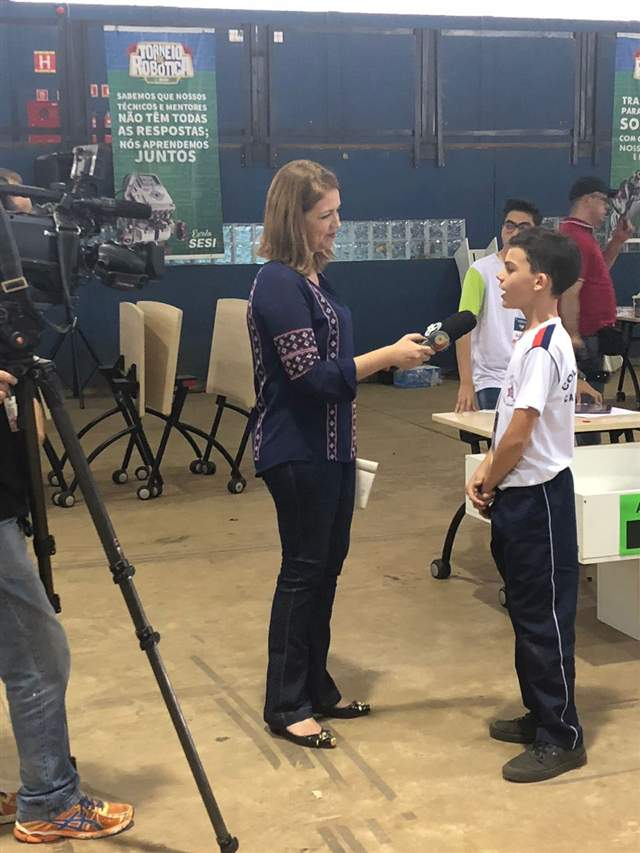
2018[FOTO 1 - LEGENDA DE UMA LINHA: Tiago]
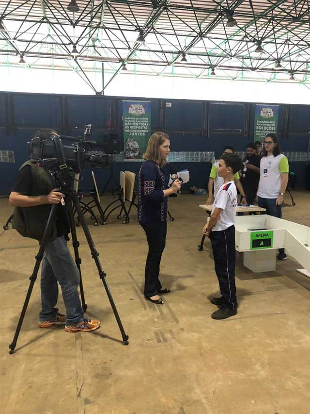
2018[FOTO 2 - LEGENDA DE UMA LINHA: Tiago]
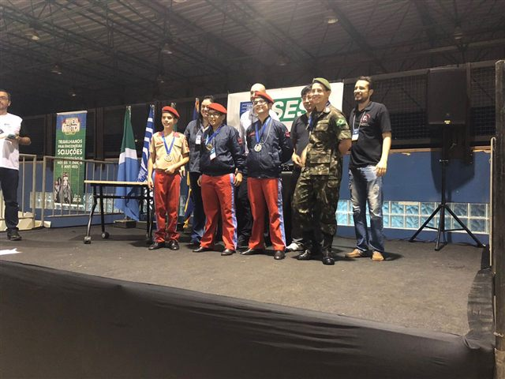
2018Competições, medalhas e anos construindo, programando e competindo.
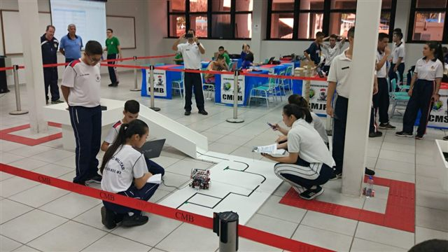
2019[FOTO 4 - LEGENDA DE UMA LINHA: Tiago]
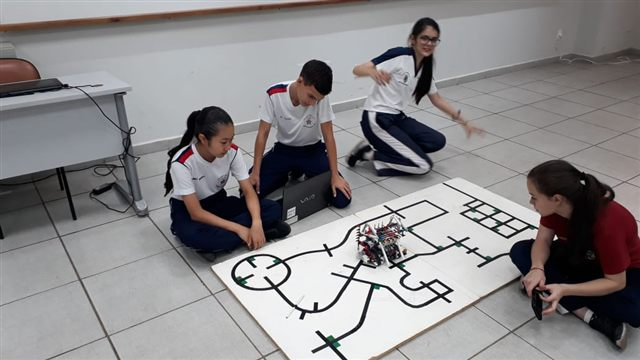
2019[FOTO 5 - LEGENDA DE UMA LINHA: Tiago]
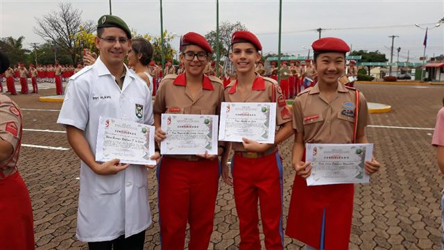
2019[FOTO 6 - LEGENDA DE UMA LINHA: Tiago]
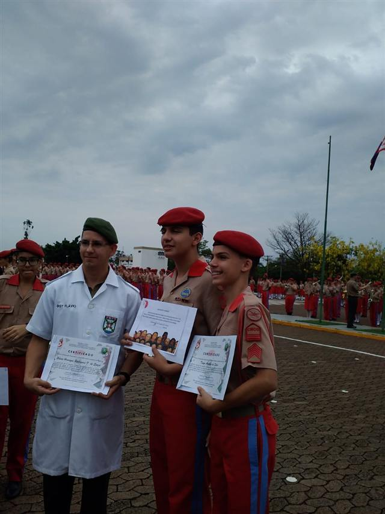
2019[FOTO 7 - LEGENDA DE UMA LINHA: Tiago]
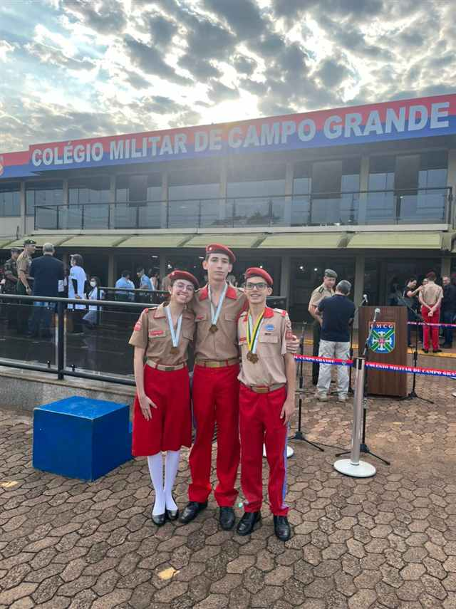
2022[FOTO 8 - LEGENDA DE UMA LINHA: Tiago]
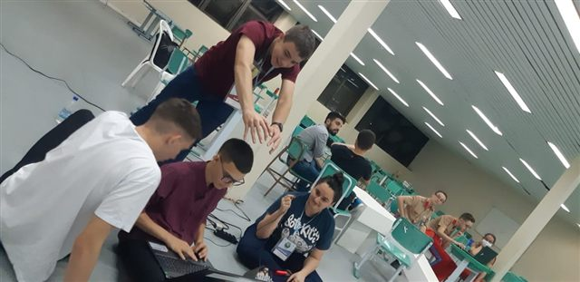
2022[FOTO 9 - LEGENDA DE UMA LINHA: Tiago]
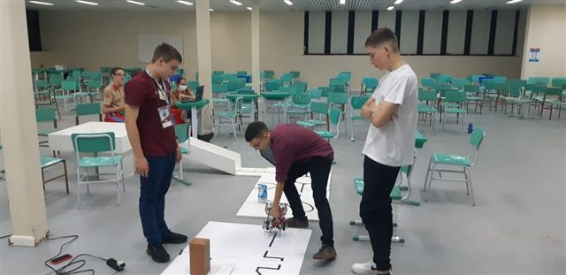
2022[FOTO 10 - LEGENDA DE UMA LINHA: Tiago]
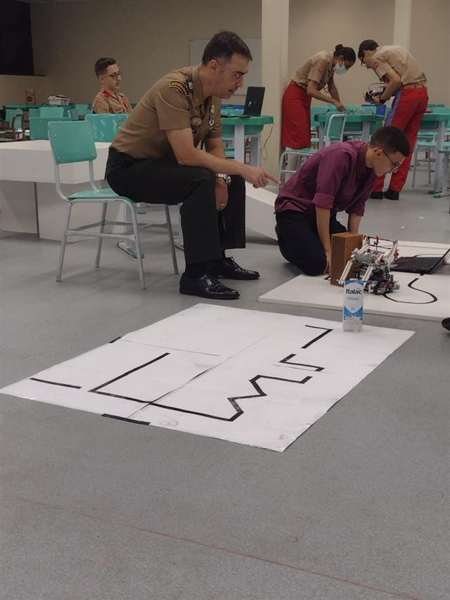
2022[FOTO 11 - LEGENDA DE UMA LINHA: Tiago]
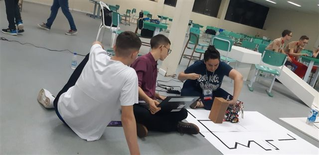
2022[FOTO 12 - LEGENDA DE UMA LINHA: Tiago]
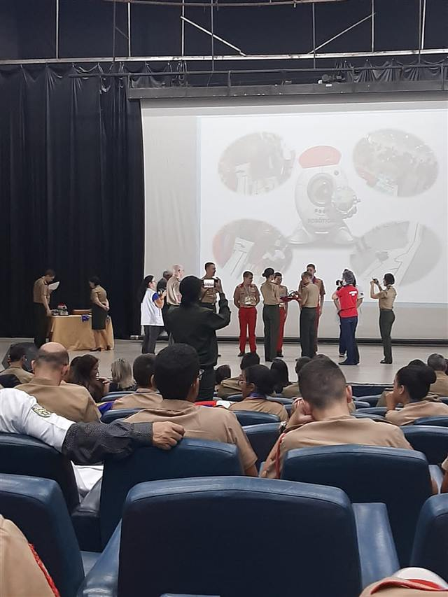
2022[FOTO 13 - LEGENDA DE UMA LINHA: Tiago]
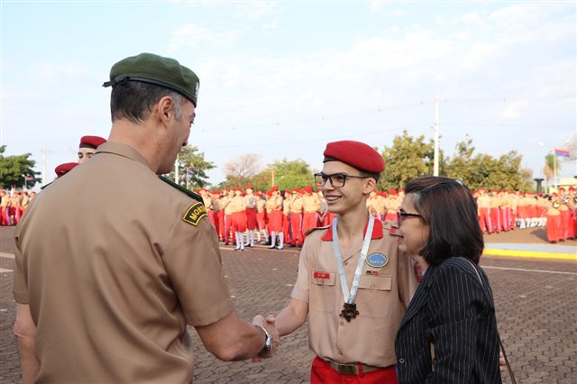
2022[FOTO 14 - LEGENDA DE UMA LINHA: Tiago]
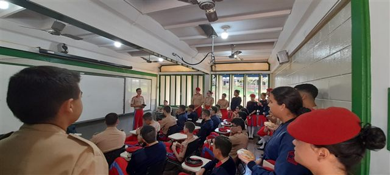
2023Depois, comecei a ensinar aquilo que eu havia aprendido.
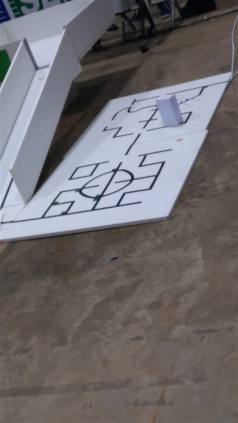
2018[FOTO 16 - LEGENDA DE UMA LINHA: Tiago]
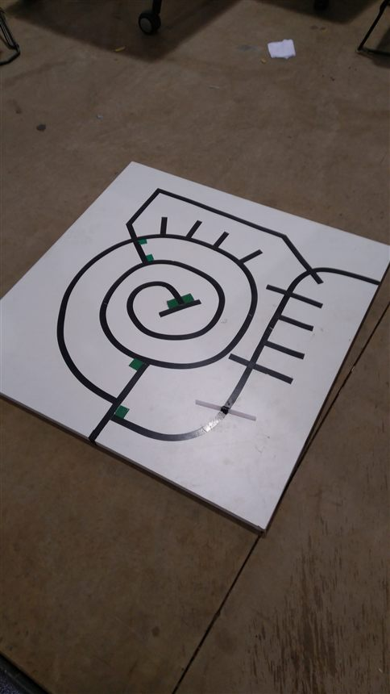
2018[FOTO 17 - LEGENDA DE UMA LINHA: Tiago]
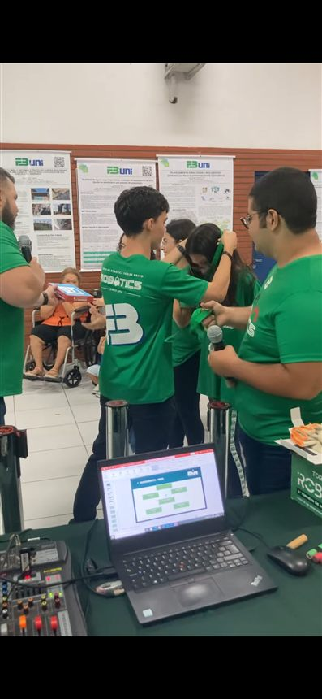
2022[FOTO 18 - LEGENDA DE UMA LINHA: Tiago]
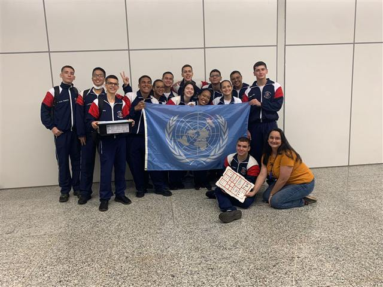
2022[FOTO 19 - LEGENDA DE UMA LINHA: Tiago]
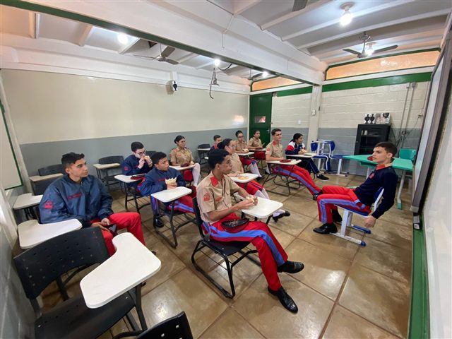
2023Uma trajetória que também passou por muito estudo, disciplina e decisão.
{{ gA.count }}
Capítulo 02 — fé
A força da construção está na base que ninguém vê
Meses de preparo. O robô pronto, a expectativa lá no teto e a certeza de que aquele era o nosso ano.
Estávamos bem!
Mas, na hora H... aconteceram TODOS os tipos de imprevistos. O título foi embora. Fiquei sem base.
Me levaram pra casa pós-competição e, naquele dia, por algum motivo, tive o privilégio de ficar sozinho em casa... e pude ir pro quarto orar, ou me derramar... Entre lágrimas, soluços e gritos, fiz uma oração mais ousada:
“Pode me conduzir pelos processos mais difíceis, porque sei que eles produzirão os melhores frutos.”
Eu tinha 12 anos quando falei isso para Deus. Entrei naquele quarto completamente abalado.
Eu entrei naquele quarto achando que o problema era a competição perdida.
Mas o problema era outro: a minha base era frágil.
A base é onde ficam apoiados a sua segurança, o seu valor e a sua identidade.
A minha estava apoiada nos resultados: se o robô ganhava, eu tava bem. Se perdia, o chão sumia.
E com o chão tremendo, eu enxergava o mundo trêmulo.
Só olhava pros meus próprios pés, com medo de cair.
Me senti igual a um robô com a base bamba: a imagem da câmera fica borrada, o sensor faz leituras erradas.
Naquele quarto, a minha base se firmou. Meu valor deixou de depender de um troféu.
Mas na robótica tem uma pegadinha: você trava o robô num chão firme... e a câmera continua ofuscada. O sensor continua lendo errado. Aí você precisa ajustar o sensor.
Foi aí que eu vi: a minha lente, a minha forma de enxergar o mundo, também estava embaçada.
E Deus me deu novas lentes.
(Esse meu amigo da equipe usava um grau de óculos altíssimo. Eu nem usava óculos na época. Mas acho que a minha visão era mais embaçada que a dele.)
Com a base firme e a lente nova, percebi que a frustração era necessária para me amadurecer, e que isso estava me forjando uma pessoa melhor.
Peguei o celular e mandei mensagem pra esse amigo, que também tinha ficado abalado. E falei pra ele da minha fé e esperança.
{{ sb.count }}
Minha fé em Jesus faz parte de tudo que estou construindo.
Fé não é uma parte do meu conteúdo. É a lente através da qual eu enxergo todas as partes.
Me sentindo vivo
Meu coração começou a ficar aquecido de amor.
Um amor maior do que robótica, conquistas acadêmicas e qualquer coisa.
Quando eu li as palavras de Jesus (embora já tivesse ouvido muito pela boca dos outros, agora tinha parado para ler a Bíblia e buscar na fonte!) minha reação era: Uau! QUANTAS PALAVRAS DESSE HOMEM FAZIAM SENTIDO!
Na verdade, geralmente minha reação lendo a Bíblia era ficar estático por horas refletindo, porque elas pegavam profundo e eu nem sabia o que dizer.
Mas vamos focar nos dias que eu entrava em êxtase, porque traz mais emoção pra história kkk
As palavras de Jesus me confrontavam, e logo consolavam. Na verdade... ele expunha minha ferida, e vinha com o remédio.
Oh! Médico dos médicos.
Eu comecei a me aprofundar. Não nas regras de uma religião, mas num relacionamento com uma pessoa: a pessoa de Jesus Cristo.
Sabe quando você mergulha tão fundo em um livro que sente que conhece o autor?
É assim que eu comecei a desenvolver o meu relacionamento com Jesus, lendo a Bíblia.
Comecei a falar desse amor com mais ousadia na pandemia, através de reuniões online com os amigos: eu tinha voz na escola! Isso talvez porque era destaque de nota e o mais conversador/bagunceiro da turma, então muitos se achegavam pra ouvir.
Com o tempo, aqueles que eram meus amigos já não queriam mais ouvir (ou não queria praticar o que ouviam na mesma intensidade que eu), e nos afastamos... até que fiquei sozinho e distante do meu grupo "popular"
Quando acabou o lockdown do Covid, voltamos pra escola e eu me sentia só, mas estava em paz com a minha decisão. Todos falavam que eu estava super "zen" se comparado ao Tiago de antes.
Mal sabiam que... sim, estava em paz quanto a tudo que antes me preocupava, mas agora uma nova angústia surgiu aqui dentro: ver meus amigos distantes da fonte do amor que eu recebi.
Claro, ninguém precisa ter a fé que eu tenho, mas... eu não quero exigir fé de ninguém, eu só quero amá-los como fui amado, e quem sabe eles sejam constrangidos por esse amor como eu fui.
Chegamos no ensino médio e comecei a ver eles buscando em outras fontes: festas, bebidas (ok, eu no fundamental eu também ia nas festas com bebidas),
mas agora as histórias ficavam mais pesadas: beber até perder noção de tudo, amiga ser estuprada bêbada, drogas a ponto de viciar, conversas sobre pornografia durante toda a aula...
eu comecei a lembrar de como eu era triste no vício da pornografia, como eu voltava das festas e chorava por não ver sentido naquilo, de como buscar aprovação das pessoas nunca me preencheu, e via amigos claramente fazendo coisas que não fariam só para ter aprovação social.
Começou a despertar uma compaixão dentro de mim e eu não pude mais conter!
Talvez precisassem do que eu tinha:
{{ sv.count }}
Dito e feito!
Comecei a falar com ousadia (ok, às vezes tremendo as pernas, na verdade).
Primeiro, reuni 3 na minha casa.
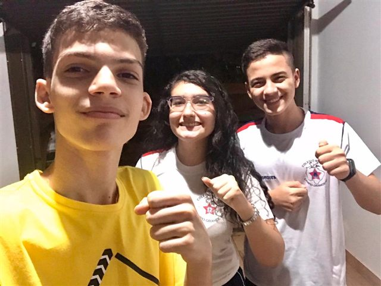
[FOTO - LEGENDA DE UMA LINHA: Tiago]
Começando pela colega de turma:
Ela era da minha sala, a gente era amigo, mas tinha uma disputa: todo trimestre o colégio atualizava um ranking de notas no sistema escolar. Os primeiros colocados entre todas as turmas, ao final do ano, ganhavam medalha pra usar no uniforme pra sempre. Um dia ela me perguntou:
Colega de turmaTiago, como você parece tão tranquilo e tira notas melhores que eu? E ainda faz robótica, esporte, um monte de coisa...
eu respondi, e lembro que até com certo frio na barriga,
TiagoNão sei explicar... eu já fui ansioso por nota como você, mas desde que coloquei Jesus em primeiro na minha vida... estudo até menos, e os resultados melhoraram
A partir daí ela quis ir na minha igreja e decidiu colocar Cristo como prioridade. Ela sentiu uma paz inexplicável e anda no amor de Jesus até hoje.
Ela era tímida, e aos poucos foi se soltando.
A menina da turma pregando na minha igreja
Nesse mesmo ano, no final, empatamos a média de nota nos milésimos, e nós dois ganhamos a mesma medalha no uniforme (coisa que o colégio nunca tinha feito)
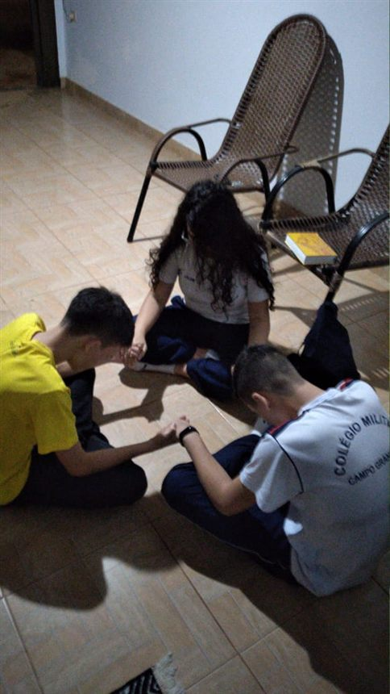
2020Oração na varanda da minha casa, com "a menina que eu disputava nota" e com um amigo autêntico
Ele me procurou DO NADA, dizendo que queria ir na minha igreja, e um tempo depois me contou que parecia sempre feliz, sorria na escola, mas em casa a cabeça pesava quando encostava no travesseiro.
Mas por que autêntico? Ele não usava máscara na escola?
Por conta dessa confissão. Por isso chamei de autêntico. Parando pra pensar, eu também usei máscara antes, e admitir isso me fez ser autêntico. Ele virou um amigão e mais pra frente liderou comigo um movimento no colégio.
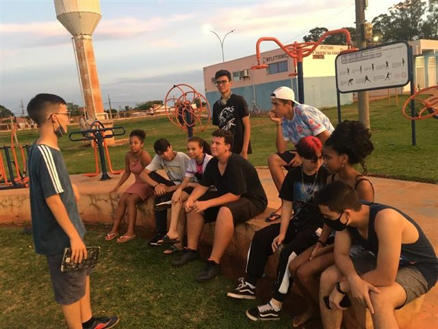
[FOTO - LEGENDA DE UMA LINHA: Tiago]
Voluntário
Intervalo com Deus
Quando entrei no Colégio Militar no 6º ano, e era serelepe, sempre fugia de um Tenente que me chamava para ir numa reunião na cantina "pra falar de Deus".
PILANTRA!
Quem diria...
Na volta pós pandemia, já no ensino médio, quando vi esse Tenente, a primeira coisa que perguntei foi:
era o sr que fazia as reuniões cristãs na cantina?
E daí a conversa fluiu. Ele fazia no fundamental e eu queria fazer no ensino médio, ele não conseguiu dar tanto apoio.
Corri atrás de muita coisa sozinho.
{{ si.count }}
Só o encontro com esse Tenente tem tantos detalhes inacreditáveis que não dá para contar tudo aqui. O desenrolar do intervalo com Deus então... nem se fala, tem tantas histórias INCRÍVEIS para contar.
Mas vou contar apenas uma coisa boba, mas é uma curiosidade que poucos sabem:
Começamos os encontros sem nenhum nome.
Um dia, olhando papéis pra jogar fora em casa, vi um folheto muito antigo... um convite para o "Intervalo com Deus". Fiquei maravilhado, porque provavelmente meu pai pegou e guardou (meu pai trabalhou nesse colégio anos antes).
Então descobri que não estava começando algo novo, mas só continuando algo que existia antes.
Busquei contato com ex alunos, descobri como faziam, e que tinha um instagram inativo de antes da pandemia, me passaram a senha e continuamos o legado dali, usando o mesmo nome. Depois que saí, ficou uma equipe que continuou após mim, e continua até hoje...
Vi que Deus não só "mexeu os pauzinhos"... ele ajeitou os pauzinhos, riscou o fósforo e acendeu a fogueira ele mesmo.
Poderia dizer que comecei isso sozinho, mas chega a ser errado...
Eu, sozinho, fugia... lembra?
Mas, com Ele, aprendi a ser ousado. Desenvolvi coragem arriscando, e só assumi riscos por uma paixão ardente.
No final, ficou óbvio não estar sozinho. Acontece o quê você vê nas fotos abaixo:
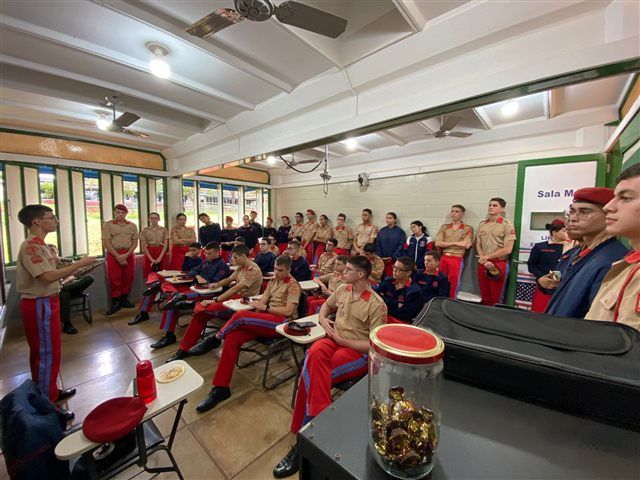
2023Sala com todas cadeiras cheias. E pessoas em pé em todo redor
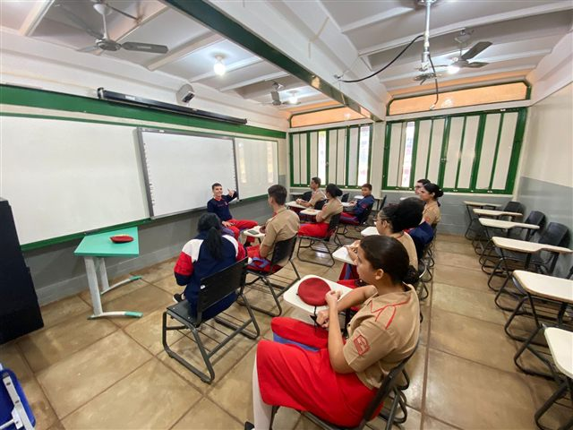
2023[FOTO 2 - LEGENDA DE UMA LINHA: Tiago]
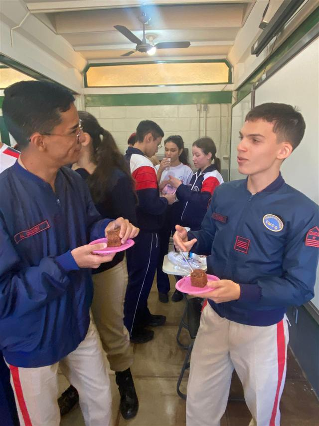
2023[FOTO 3 - LEGENDA DE UMA LINHA: Tiago]2023[FOTO 4 - LEGENDA DE UMA LINHA: Tiago]
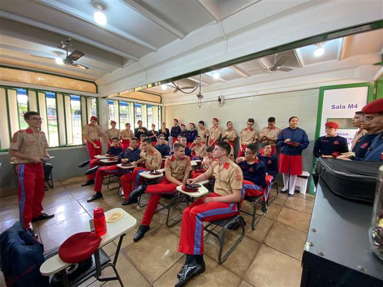
2023[FOTO 5 - LEGENDA DE UMA LINHA: Tiago]
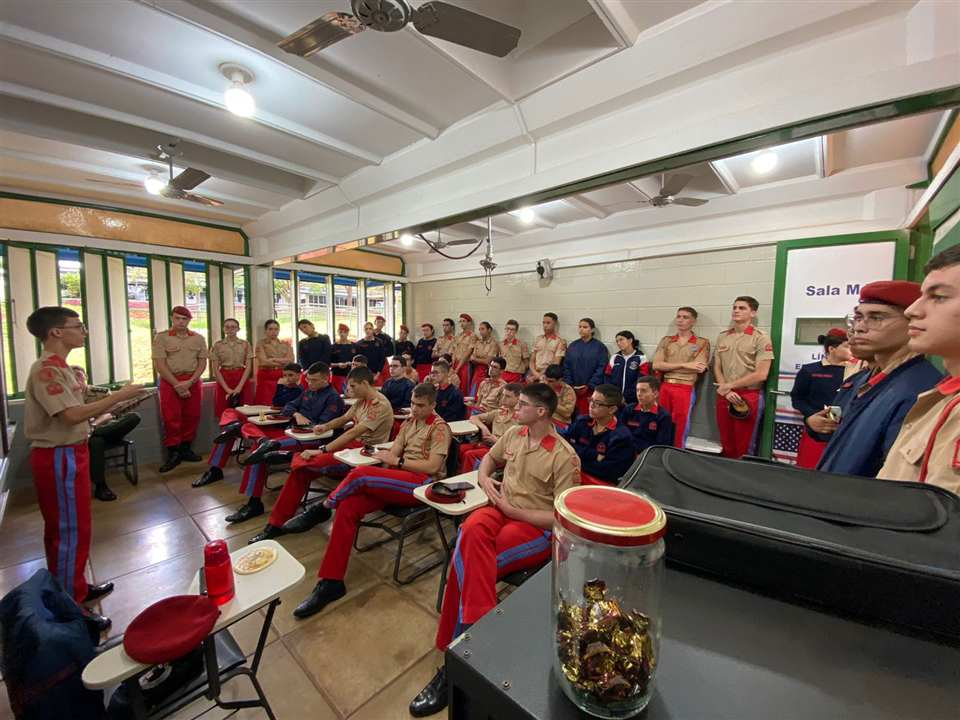
2023[FOTO 6 - LEGENDA DE UMA LINHA: Tiago]2023[FOTO 7 - LEGENDA DE UMA LINHA: Tiago]
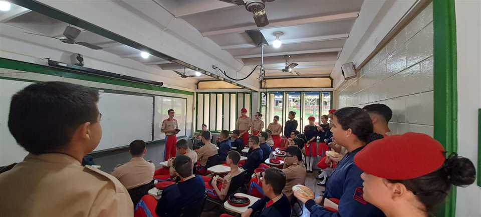
2023[FOTO 8 - LEGENDA DE UMA LINHA: Tiago]2023[FOTO 9 - LEGENDA DE UMA LINHA: Tiago]
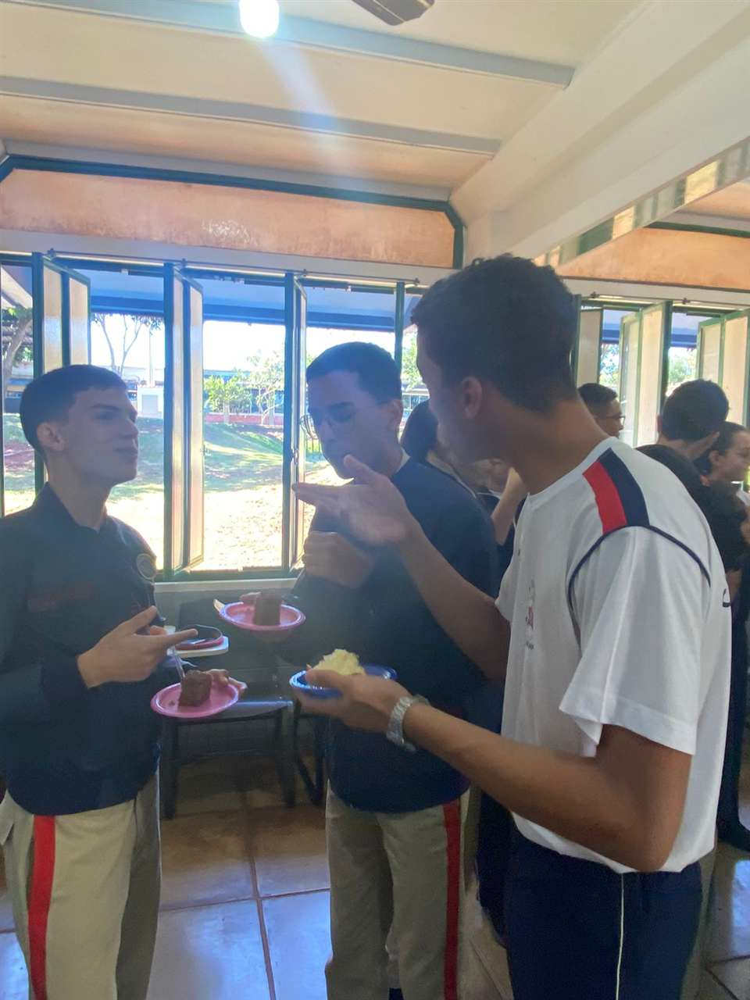
2023[FOTO 10 - LEGENDA DE UMA LINHA: Tiago]2023[FOTO 11 - LEGENDA DE UMA LINHA: Tiago]2023[FOTO 12 - LEGENDA DE UMA LINHA: Tiago]
{{ gI.count }}
Legião de Honra
Depois que me converti e melhorei meu comportamento na escola, consegui entrar numa iniciativa que eu queria há muito tempo...
a Legião de Honra, que fazia ações sociais, e só aceitava alunos exemplares, tanto em nota (coisa que eu tinha), quanto em comportamento (coisa que eu não tinha nos primeiros anos do colégio militar). E para ser selecionado também era preciso fazer um discurso dizendo o porquê queria entrar, diante de todos que já estavam dentro da legião.
Na primeira tentativa... fiz um bom discurso, mas me tiraram (obviamente pelas minhas atitudes: entrar no banheiro feminino, usar o uniforme de forma incorreta, atrapalhar a aula, zuar com os amigos que participavam da legião chamando de panelinha), na segunda tentativa me cortaram da lista antes de eu fazer o discurso.
Quase desisti disso... Mas após pandemia vi aberta a inscrição, "falei: ah, vou tentar ", fiz o discurso de novo (dessa vez com verdade). E não esperava entrar, porque é difícil apagar uma má fama diante das pessoas. Você pode ser perdoado por Deus e ainda sofrer as consequências. Mas... se você ta no time dele, ele vai transformar até o mau em benção
Havia aluno mais antigo dentro desse grupo da Legião, um veterano que eu sempre incomodava zuando com ele, e um dia ficamos na formatura como guarda bandeira um do lado do outro e fiquei quieto a formatura toda, mais que todos ao redor. Lembro até hoje do olhar dele admirado pra mim e com cara de aprovação fazendo "sim" com a cabeça, eu olhei pra ele profundamente uma vez e vi a reação e senti a afirmação.
Depois ignorei-o (eu ficava orando, mexendo bem pouco os lábios ou dentro da cabeça - era o certo ficar em silêncio nas formaturas) mas tinha hora que davam toque de relaxa posição e a maioria conversava (com certeza o eu de antes). Esse rapaz com certeza contou dentro da assembleia da legião que viu minha melhora (é uma suspeita até hoje, as assembleias são secretas, mas ele era relevante lá) e dessa vez... me aprovaram!
Inclusive, eu estava tão desapegado que não lembrei o dia que sairia o resultado. Na noite que anunciaram na internet, eu estava fazendo uma live falando de Jesus no Instagram. Uma amiga que eu nem falava há muito tempo entrou na live só para dizer "TIAGOOO, VOCÊ ENTROU NA LEGIÃO". Eu tava orando e quando abri os olhos só vi um monte de comentário, e disse algo do tipo "sério? obrigado por avisar." sem muita reação. Só depois fui processar a alegria e agradecer ao Papai. Esse é o significado daquela bolacha azul que você vê no peito do meu uniforme.
{{ sl.count }}
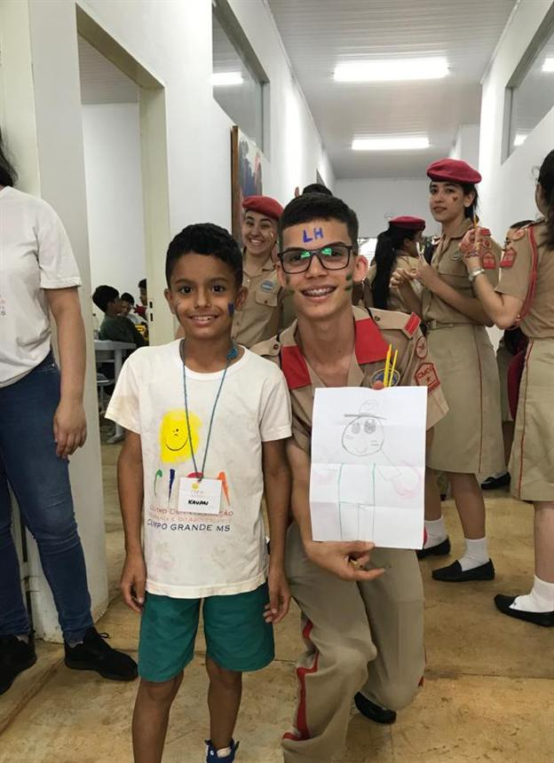
2022[FOTO 1 - LEGENDA DE UMA LINHA: Tiago]
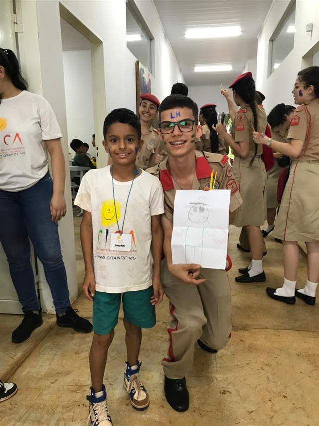
2022[FOTO 2 - LEGENDA DE UMA LINHA: Tiago]
{{ gB.count }}
Nessa visita a um orfanato que fizemos no Dia das Crianças com a Legião de Honra, uma criança me desenhou e, tímido, entregou para uma amiga, que me contou e entregou. olha a alegria dele de ter seu desenho reconhecido, e minha alegria de ser desenhado
DIFERENTE
Neurodivergente: é isso que me faz um pouco diferente.
Diagnosticado com AHSD (Altas Habilidades/Superdotação) há mais de uma década. Começou assim:
8 anos · aula de matemática
Eu terminava as atividades rápido e ficava à toa, conversando. Em vez de brigar comigo, a professora Sônia (obrigado, professora 🙏) chamou a coordenação e pediu uma avaliação no NAAHS, o núcleo de Altas Habilidades do estado. Uma neuropsicóloga confirmou.
no núcleo
Pouca estrutura. Basicamente me deixavam desenhando e pintando.
Achei chato. E logo saí.
13 anos · de volta
Uma amiga do meu grupo de robótica contou que o núcleo tinha mudado de nome (agora CEAM/AHS) e de lugar. Sem expectativa nenhuma, voltei. Novo teste psicológico: deu de novo. E todos os psicólogos e psiquiatras de lá pra cá só confirmam.
No Centro Estadual de Altas Habilidades, em Mato Grosso do Sul, eu desenvolvia projetos de exatas: robótica, matemática, física e programação. A área em que eu tinha sido diagnosticado.
Isso não me faz melhor. Só me faz diferente.
Todo mundo tem potenciais a serem explorados e dificuldades a serem tratadas.
Até que, do nada (após a pandemia rs), os meus interesses mudaram.
Eu já estava saturado das aulas de matemática. E meu tempo era escasso:
ensino médioIntervalo com DeusLegião de Honraprojetos de ciênciasrobóticaigrejaesportesagenda cheia
Cada atividade do meu dia tinha que fazer sentido pras minhas prioridades. E ali não estava fazendo.
Eu queria explorar a minha fé. As profundezas do que acredito, de onde veio, e como viviam os homens que viveram intensamente por ela.
edição especial · 10 histórias
Os que viveram pela fé
Homens que eu queria estudar. Toque num nome ou vire a página.
Israel · séc. IX a.C.
Elias
Um homem só, diante de uma nação inteira que tinha virado as costas pra Deus. Ele orou, e desestabilizou a nação: fogo caiu do céu no monte Carmelo.
1 Reis 18
Babilônia · séc. VI a.C.
Daniel
Um jovem estrangeiro com uma fé tão prática que fez o rei da Babilônia se constranger. Os amigos dele foram livrados da fornalha. Ele, da boca dos leões.
Daniel 3 e 6
Deserto da Judeia
João Batista
Sem templo, sem palco. Só uma voz clamando no deserto. E multidões saíam das cidades pra ouvi-lo e se arrepender.
Mateus 3
Galileia
Jesus
O próprio Cristo. Todos os outros nestas páginas só apontaram pra Ele.
Hebreus 12:2
Jerusalém
Pedro
O pescador que negou Jesus três vezes. Semanas depois, pregou em Jerusalém, e quase três mil pessoas se converteram num só dia.
Atos 2
Império Romano
Paulo
Perseguia os cristãos. Depois de encontrar Jesus no caminho, virou o apóstolo que levou a mensagem pelo Império Romano.
Atos 9
Inglaterra · séc. XVIII
John Wesley
Abalou a Inglaterra. Expulso dos templos, foi pregar nas praças. E milhares se reuniam ao ar livre pra ouvir e se arrepender.
América do Norte · séc. XVIII
David Brainerd
Viveu entre os povos indígenas, pregando com a saúde frágil. Morreu com 29 anos, e o diário dele inspirou gerações de missionários.
País de Gales · 1904
Evan Roberts
Um jovem no centro de um avivamento em que o país se arrependeu. Bares fechavam sozinhos. Os donos de cavalo pararam de xingar e bater no bicho pra ele correr. E a polícia, sem crime pra resolver, ia pra igreja adorar junto.
Coreia do Sul · 1958
Paul Yonggi Cho
Começou numa tenda em Seul. A igreja que nasceu ali virou uma das maiores do mundo.
{{ rv.conta }}
"...venceram reinos, praticaram a justiça, alcançaram promessas, fecharam a boca de leões, apagaram a força do fogo..."
Hebreus 11:33-34
Só que como eu ia explicar isso pra coordenação? Pedir pra sair justo das aulas em que eu tinha mais desenvoltura, pra estudar história da igreja?
pernas tremendobarriga geladacoração apertado
Mesmo assim, fui.
eu
Eu quero trocar os meus atendimentos de exatas. Já estou saturado e tenho novos interesses nessa fase da minha vida.
coordenação
Claro, Tiago. E quais seriam os seus novos interesses?
eu
Eu quero aprender a história da igreja.
coordenação
Nossa, você vai se identificar então com a professora de história.
Foi assim: simples. Na semana seguinte eu já estava lá. E o que eu descobri no primeiro dia?
A professora de história era pastora.
E não daquelas de jargão pronto. Amável, sábia, estudiosa. Os livros que eu queria ler? Ela já tinha lido. As histórias de avivamento que eu nunca achei ninguém na igreja pra me contar? Ela já tinha estudado.
E ela me questionava fundo:
O que é avivamento pra você? Define em 3 palavras, sem pensar muito.
Foi a melhor experiência da minha vida.
E a melhor decisão: ter me posicionado no que eu queria. Pra descobrir que era um desejo que Ele implantou no meu coração, num caminho que Ele já tinha preparado.
Capítulo 03 — o sonho do vestibular
Meu sonho era o IME.
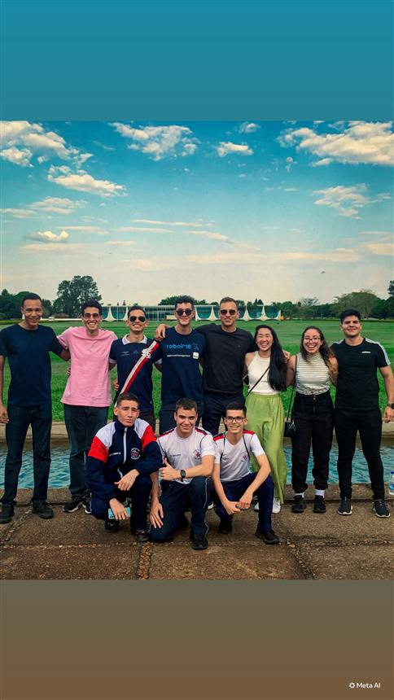
Na foto, Palácio da Alvorada, e nossa equipe campeã de robótica com a equipe de Robótica do IME, em passeio por Brasília
Após uma competição de robótica que ficamos em primeiro lugar em Brasília, os alunos do IME nos disseram que tínhamos um currículo forte o suficiente para pedir uma bolsa no melhor curso preparatório do Brasil, que fica em Fortaleza...
Disseram também que essa era a melhor forma de termos chances para passar na prova deles: O VESTIBULAR MAIS DIFÍCIL DO BRASIL💀 (é esperado que se faça alguns anos de cursinho)
Mais uma vez, dito e feito!
Mandamos nosso currículo, e ganhamos bolsa 100% no cursinho mais caro do Brasil.
Pegamos o avião para Fortaleza para fazer uma "conexão" com o nosso sonho haha
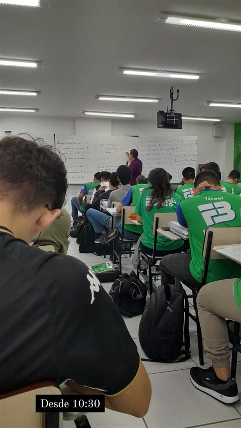
Tempo de preparação
Eu, e meu amigo da equipe de robótica sentado logo na minha frente, no cursinho em Fortaleza
Esse amigo agora está na faculdade mais inovadora da América Latina, a Inteli
O cara é bom, @paulo_rbto
Capítulo 04 — mudança de rota
Mas Fortaleza me mostrou um mundo de possibilidades que eu ainda não conhecia.
E sim, abri mão de ir para o IME 💀 Por quê? Difícil? Também kkk mas eu poderia continuar tentando...
Acontece que: descobri que não era o único lugar possível de continuar desenvolvendo o que gosto.
Na verdade... comecei a enxergar oportunidades maiores no mundo da robótica.
o que me abriu a visão
Residência no IFCE · Sistemas Embarcados
Trabalhando no laboratório de Sistemas Embarcados do Instituto Federal do Ceará (uma área específica da robótica rsrs), desenvolvendo projetos para grandes empresas e startups.
Conexão com grandes empresasprojetos reais, pessoas-chaves
Desenvolvimento de startupsvisão de mercado em robótica
Direito de errardo mais jovem (eu rsrs) ao mais velho, todos tratados como estagiários
Foi uma experiência enriquecedora em todos os sentidos:
Contato com pessoas incríveis, aprendi muita coisa profunda de eletrônica, tive espaço pra aprender, investimento em capacitação constante. E no sentido financeiro também éramos valorizados:
+3 milpor mês
4hpor dia
5x2escala
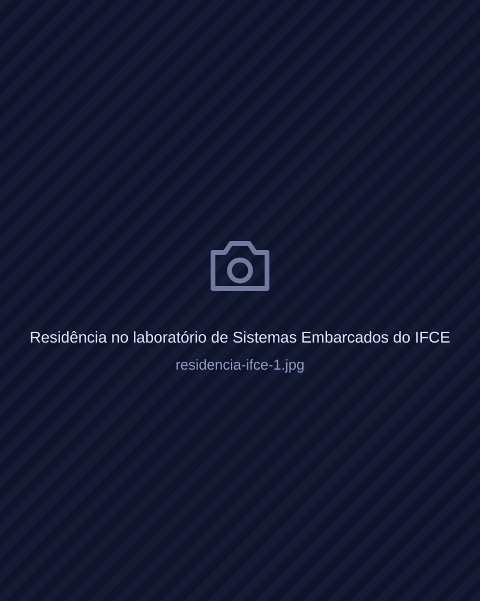
[VÍDEO] residencia ifce video 1
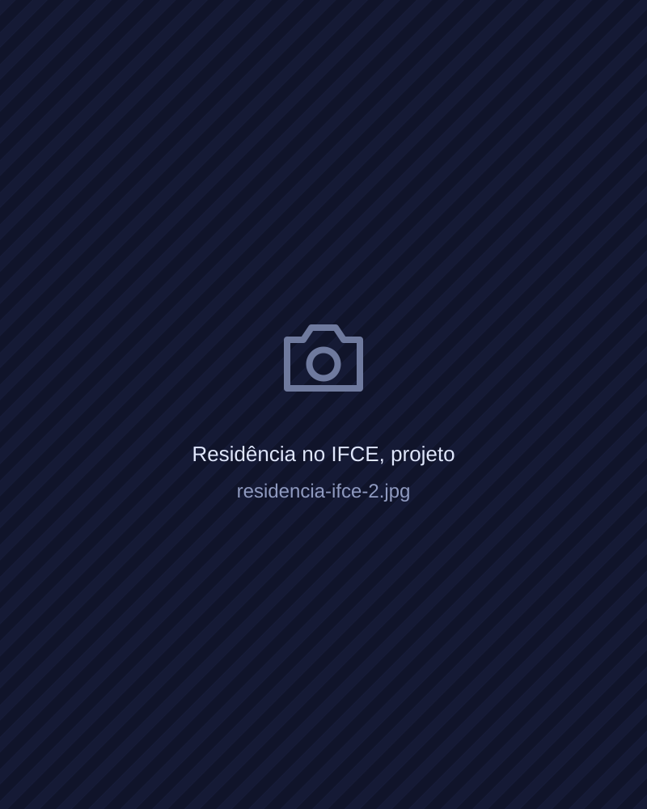
Capítulo 05 — professor
Comecei a trabalhar dando aulas.
Minhas experiências ensinando passaram por escolas de referência como:
CódigoKidFarias BritoColégio Militar de FortalezaInstituto Federal do Ceará
Mas tudo começou num canto escuro do prédio do cursinho pro IME
Eu deitado num banco. Matando uma aula de inglês (fácil) do cursinho pro IME, enquanto orava e refletia sobre: 1. o quanto eu queria que meus amigos do cursinho conhecessem Jesus (e muitas orações foram respondidas, tá?)
2. Como eu tava evoluindo pouco nos simulados pro IME.
Então abri o YouTube num canal que sempre me ajudou desde a minha conversão: JesusCopy.
Ouvindo o Douglas Gonçalves entrevistando o pastor Paulo Borges Júnior. Gostei tanto que depois ouvi ele numa entrevista com o Vilela do Inteligência (inclusive achei os links no histórico do YouTube):
Logo gostaram do meu trabalho, me contrataram e até ressarciram o tempo como voluntário.
Depois fui pra outra escola. E outra ganhando mais. E outra ganhando mais.
Mas isso é história pra outra hora.
O principal aprendizado é: você encontra seu caminho servindo pessoas com as habilidades que tem, e até quando acha que não têm, apenas se disponha com aquilo que tem mãos, mesmmo que sejam 5 pães e 2 peixinhos(quem leu, entenda).
Dava aula e estudava, ensinar enquanto estou aprendendo... te lembra algum instagram por aí (olhinhos arregalados)?
[VÍDEO] video 1 aula codigokid
[VÍDEO] video 2 aula codigokid
Capítulo 06 — faculdade
Ao mesmo tempo, fazia faculdade de Análise e Desenvolvimento de Sistemas.
Eu gostava de programação. Mas não queria programar apenas sites e aplicativos.
Sempre fui o programador das minhas equipes de robótica. Só que o que eu gosto de programar tem corpo:
eu gosto de programar robôs.
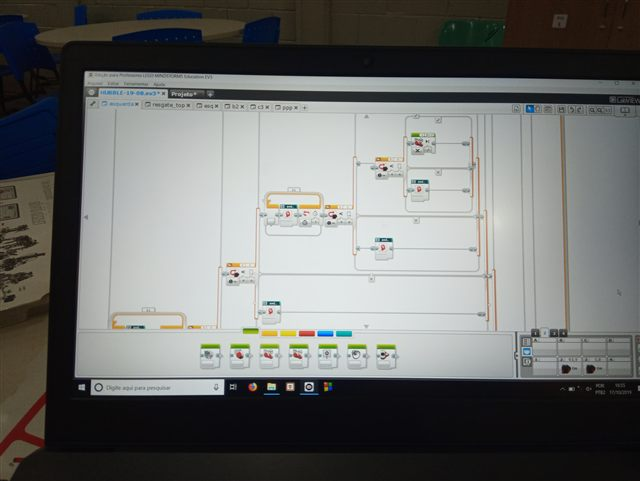
[FOTO - LEGENDA DE UMA LINHA: Tiago]
Capítulo 07 — vendas
Decidi sair do emprego no Instituto Federal!
PaiO QUÊ!?
ChefePor quê?
AmigoComo assim??
Sim, todos me questionaram, garantindo que estava certo da minha decisão, e saí! Em paz... porque eu tinha algo claro em mente:
“Não trabalhe para ganhar dinheiro, trabalhe para aprender”
Aprendi no livro best-seller Pai Rico, Pai Pobre
Aprenda as habilidades necessárias para fazer o dinheiro trabalhar pra você.
Foi uma experiência incrível enquanto durou em todos os sentidos. Mas os motivos eram claros na minha mente:
{{ m.n }}
{{ m.txt }}
{{ rolo.conta }}
Sou jovem e quero usar minha energia para construir algo de valor para a sociedade. Quero que muitos vivam a robótica e sejam transformados por meio dela como eu fui. Quero expandir isso com um método escalável.
Chegou a hora de abrir a minha StartUp!
Mas pra isso eu vi que precisava de tempo e dinheiro
"Ah, Tiago, mas tu trabalhava 4h por dia e ganhava mais que metade da população brasileira, vai me dizer que faltava tempo e dinheiro!?"
Sim, exatamente.
O esgotamento mental era grande. Nunca vai entrar na minha cabeça admitir que as pessoas trabalham 8h por dia para ganhar um salário mínimo.
Dinheiro eu gastava tudo para sobreviver. (Descobri que no Brasil 3 mil é sobrevivência) Pagando meu aluguel, minhas refeições, deslocamentos, tudo da vida de quem mora sozinho...
E tempo... bom, apesar de estar apenas 4h no trabalho, eu fazia faculdade né, e também academia, e também igreja.
tempo
dinheiro
energia mental
Onde ia arranjar tempo pra pensar no meu negócio próprio?
Tivemos férias final do ano, pensei bastante, e no primeiro dia do retorno anunciei minha saída.
janeiro
6
No dia 6 de janeiro (meu aniversário inclusive), foi meu último dia, algo simbólico pra mim. Decidi: a partir de hoje iria trabalhar pra mim, assumiria as rédeas da minha vida.
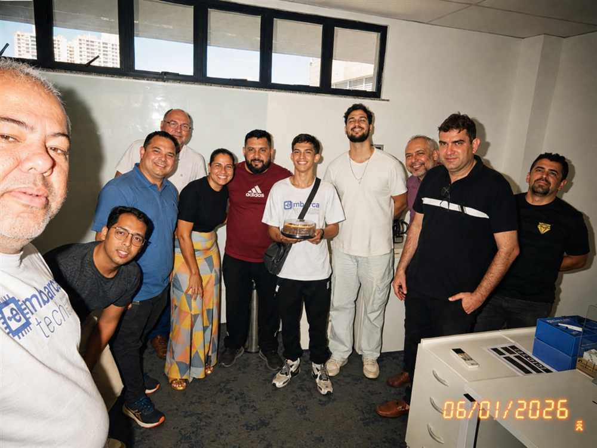
Despedida do laboratório e comemoração do aniversário
Era um laboratório secreto, assinei um termo de confidencialidade por 2 anos, então não posso falar muitas coisas.
Troquei o ar-condicionado do laboratório secreto pelo sol na cabeça e areia no pé.
Ouvi dezenas de "nãos" até pegar o jeito. Mas descobri que vender um produto na rua me dava mais retorno e liberdade do que vender a minha hora.
Comecei a vender 4 horas por dia, dia sim dia não, na praia de Fortaleza. Mas eu contava o deslocamento dentro das 4h, e no trabalho, se contasse deslocamento dava 6h.
LABORATÓRIO
tempo6h
todo dia
dinheiro3 mil
por mês
praia
tempo4h
dia sim, dia não
dinheiro4 mil
por mês
Ganhei tempo, dinheiro, tudo que eu precisava.
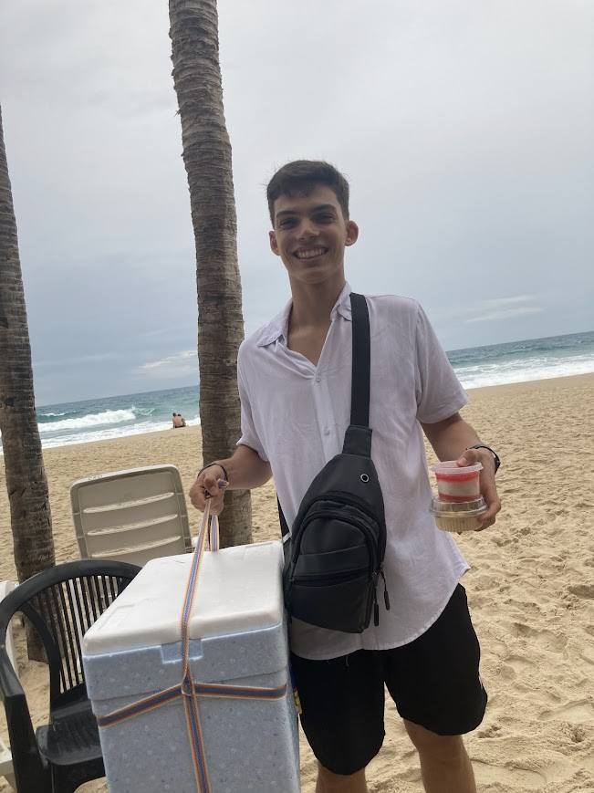
Primeira vez vendendo na praia e os meus próprios produtos. Eu não comecei vendendo na praia, e não vendia os meus produtos. E foi aí que vi que vender dava mais certo que vender a hora, mas fica pra outra hora essa história... ela é muito engraçada
Em fevereiro, tranquei a faculdade.
Ela também me sugava tempo e energia, e não estava me dando o ROI necessário — o retorno sobre o investimento. Eu gastava energia e tempo ali sem ver que aquilo iria, de fato, me ajudar a concretizar o meu sonho.
Aquela faculdade ensinava mais sobre programar sites e aplicativos. E eu já sabia o que queria programar.
Tranquei a faculdade e decidi viajar vendendo.
Fiz um rolê pelo Nordeste: Olinda, Recife, Natal.
Depois fui para São Paulo, e voltei para a minha cidade natal para ver os meus pais. Lá continuei vendendo... Inclusive, sem ter o apoio do meu pai pra isso (ele achava estranho e perigoso)
Um dia estava no posto de gasolina, à noite, frio, mas as vendas estavam saindo aos poucos, e decidi continuar. Depois de muitos "nãos" seguidos... (parece que as bençãos sempre vêm assim né?) Encontrei um japonês. Vendi pra ele. Japonês você sabe como é: Inteligentes, práticos, desenrolados. Quando falei que estava levantando recurso pra abrir a minha empresa de robótica. Ele já meteu um "AH, ENTÃO VOCÊ TRABALHA NA MESMA ÀREA QUE EU? Conhece o laboratório do Sebrae?"
Ele me indicou pro Sebrae numa noite. No dia seguinte eu já estava lá, falando com os consultores.
Eles me deram uma mentoria sobre o meu modelo de negócio: a ideia de criar uma escola de robótica online era válida, mas levaria tempo.
Enquanto isso, eu poderia continuar vendendo os doces e criar um robô para vender junto comigo: aumentar a conexão com o cliente, o número de conversões e o dinheiro que entra — pra investir na estruturação da escola.
{{ sg.count }}
[FOTO OU RENDER: o robô que vende comigo]
Um robô vendendo comigo, pra pagar a escola que eu quero construir.
Um dia, numa praça de alimentação em Fortaleza
Estava vendendo doces. Meus pais não apoiavam. Achavam perigoso. Já tinham me ligado pra falar disso.
Nesse dia vendi para uma mãe que, me parou, perguntou quantos anos eu tinha, olhou nos meus olhos e disse:
Olha, eu tenho um filho de um ano. Se o meu filho tiver a sua idade fazendo exatamente o que você está fazendo, eu vou ser a mãe mais orgulhosa do mundo.
Era um casal fitness. Compraram de mim só porque gostaram de mim e da minha abordagem e do meu propósito, o produto em si nem fazia tanto sentido pra eles.
Quando um mendigo chegou pedindo o resto do que tinha sobrado na mesa, eles deram o doce. Deram tudo.
Eu segurei enquanto ela estava ali.
Na hora que ela foi embora, eu tive que sair.
Naquele dia, quando cheguei em casa, eu chorei muito. Em casa não, lembro que foi na lavanderia(vida de solteiro ne). Não sei se chorei de tristeza ou de alegria.
Era porque outras pessoas entendiam o que eu estava fazendo. E, mais do que isso, admiravam.
Eu só queria que os meus pais vissem isso.
Mas... mesmo que eles não vissem. Mesmo que eles não entendessem.
Aquilo me trouxe muito mais convicção do que eu tô fazendo, do porquê eu tô fazendo, e deu ânimo pra continuar.
Capítulo 08 — mudança, de novo!
Mudança, de novo!
Nessa época vendendo, muita gente me perguntava da faculdade.
pergunta_recorrente.txt
> E a faculdade, Tiago?
Eu, sinceramente, acredito que o sistema de ensino das faculdades está ultrapassado.
E quero aprender os assuntos básicos, como cálculo diferencial, principalmente 2 e 3, física experimental, porque gosto de extas e porque quero expandir minha mente, o meu raciocínio matemático e físico, a forma como enxergo o mundo, porque sei que ele é desenhado pelas leis matemáticas e físicas. Quero fazer pelo prazer de aprender.
Diferente de muitos, eu não espero que a faculdade me dê um bom emprego.
No laboratório eu trabalhei ao lado de pessoas com mestrado e doutorado. De igual pra igual, ganhando a mesma coisa — e vendo que elas passavam os mesmos sufocos pra se manter financeiramente.
Tudo bem que, enquanto eu fazia faculdade, elas trabalhavam em outro emprego e somavam os salários. Mas poucos saem dessa linha de formação tradicional com abundância de recursos. E quando ganham bem, é à custa de dedicação exclusiva.
Eu quero fazer o dinheiro trabalhar pra mim.
1
Ter recursos pra, primeiramente, viver com liberdade.
2
Usar essa liberdade pra pensar em ideias inovadoras e gerar impacto. (O que já faço no meu tempo livre: isso é intrínseco a mim.)
E por que eu gosto de pensar em formas de resolver problemas da sociedade?
Porque os meus problemas já estão todos resolvidos.
Olho no espelho, sorrio e me encontro plenamente satisfeito. Desde que conheci Jesus, tenho tudo que preciso e que quero. Ele pregou todos os meus problemas na cruz.
Ele não tem deixado faltar nada pra essa fase da vida (é a promessa dEle pra quem busca os interesses do Reino, e Ele tem cumprido). Aquilo que não tenho, vejo que nem precisava, nem queria de verdade, ou que atrapalharia outra coisa que quero mais intensamente.
Só às vezes me olho indignado... por ter tanto e fazer tão pouco.
Voltando ao assunto da faculdade.
Eu pensei em retomar Análise e Desenvolvimento de Sistemas. De fato gosto de construir sistemas, mas prefiro os que ultrapassam a tela de um computador.
(ainda bem que aprendi a fazer o básico de sites, como esse aqui)
Mas gosto de ver as coisas funcionando na vida real, construir máquinas.
E a melhor faculdade que integra hardware e software é a Engenharia Mecatrônica.
E foi assim que vim parar em Florianópolis.
E por que Floripa?
Passei numa faculdade federal de alto conceito daqui
Foi o primeiro processo seletivo que tentei, para retomar a faculdade o quanto antes, e deu certo. (tranquei Análise de Sistemas no 1º semestre de 2026, retomei Engenharia no segundo semestre).
Cidade segura, rica, bonita e com praia!
Polo de inovação, maiores eventos de tecnologia e empreendedorismo do Brasil acontecem aqui!
Capítulo 09 — educação
Mas eu não parei de ensinar.
A robótica me ensinou a usar tecnologia para construir robôs.
A educação me ensinou a usar a tecnologia para desenvolver pessoas
Decidi ensinar por aqui o que estou aprendendo, usando as redes sociais: uma tecnologia que tem sido usada por muitos para distrair, mas pode ser usada para construir. Aqui estou empreendendo minhas ideias, e incentivo você a fazer o mesmo. Já temos na mão as melhores ferramentas, só precisamos de pessoas com uma mensagem carregada de verdade. Nossa geração tem olfato aguçado para hipocrisia e incoerência.
Capítulo 10 — empreender
O que significa empreender?
empreenderDo latim, imprehendere (ou inprehendere), significa "tentar", "tomar para si" ou "apoderar-se" O sentido original e literal da palavra remete à ideia de colocar algo em execução.
Toque nas 3 chaves:
O empreendedorismo nasce nesse momento exato em que você decide capturar uma ideia, assumindo para si a responsabilidade de tirá-la do campo da imaginação.
Empreendedor não necessariamente é quem inicia uma empresa. Isso é ser empresário.
Eu quero ser os dois. Risos, porque acredito que algumas empresas são capazes de gerar muito valor e impacto na sociedade.
Mas no livro Originais: Como os Inconformistas Mudam o Mundo (de Adam Grant), ele mostra que a atitude de questionar o status quo e propor novas soluções (o cerne do imprehendere) não pertence apenas a empresários, mas a qualquer pessoa que deseja inovar em sua comunidade, família ou trabalho.
Eu quero servir as pessoas usando a habilidade que tenho, principalmente em robótica e educação, e inovar na forma de ensinar robótica.
Já tive várias ideias e tentei botar elas pra frente. Muitas ideias minhas deram certo como podem ver na minha história, mas... nem todas.
Talvez seja exatamente esse o ponto...
Por tentar tanto que conquistei o que conquistei até aqui. Isso só me motiva a continuar tentando tirar minhas ideias do papel.
E, na real, cada fracasso até aqui tem me gerado uma aprendizagem validada diferente, para redesenhar minha startup.
“Aprendizado validado”
É assim que Eric Ries chama, em A Startup Enxuta, o que sobra de informação de um teste que deu errado.
Capítulo 11 — o que estou construindo agora
Uma escola de robótica online.
Uma forma acessível e personalizada de ensinar robótica.
online
{{ d.onT }}
{{ d.onS }}
VS
presencial
{{ d.offT }}
{{ d.offS }}
{{ vs.conta }}
Não é apenas sobre aprender robótica, um conteúdo técnico. É sobre explorar uma ferramenta: desenvolver raciocínio lógico, a capacidade de resolver problemas e criar algo envolvente com as próprias mãos.
Toque pra ver onde isso te leva:
{{ c.t }}
Capítulo 12 — disciplina
O corpo também faz parte da construção.
Por isso vou falar de treinos, esportes, meditação, respiração.
Eu falo isso porque, pelo pouco que entendo de máquinas, sei que todas elas precisam de manutenção ou prevenção.
Imagina a máquina mais complexa do mundo:
o nosso corpo.
Intensidade
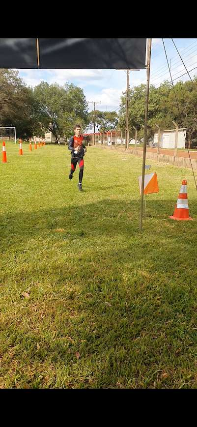
Resistência
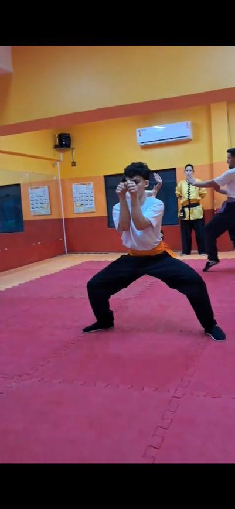
Constância
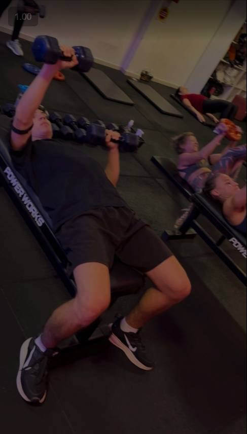
RESULTADOS
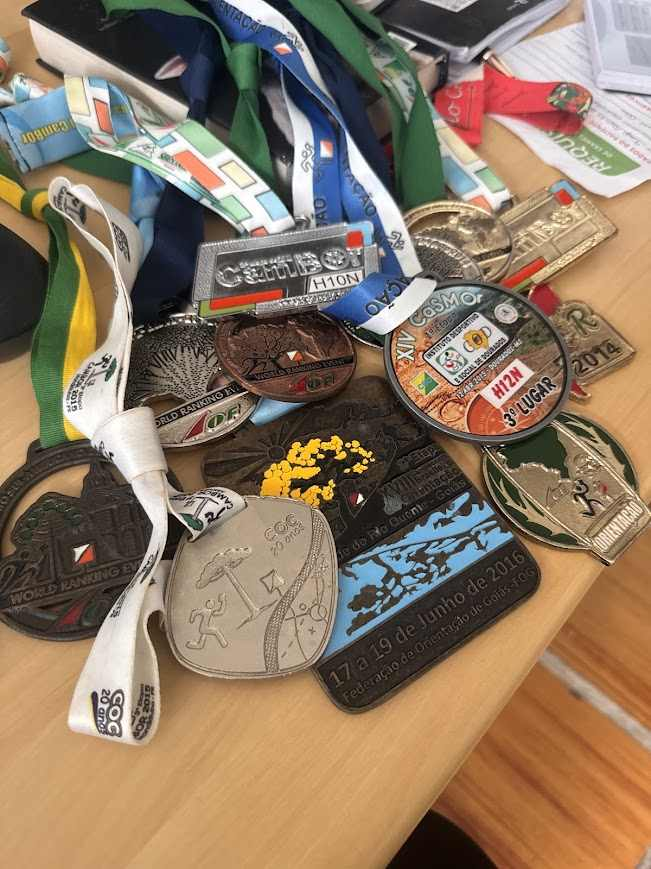
Aqui não tem de robótica, nem matemática, só esporte
Mas a disciplina para superar desafios é a mesma
Eu levei um tempo pra entender a importância de criar um site como esse que você está lendo.
Mas vi que talvez fosse importante me conhecerem. Porque posto coisas meio soltas: do nada tô num lugar, depois em outro.
Se nem minha família entendia o porquê das minhas decisões, imagina quem me acompanha de longe.
Nesse tempo, fui mal compreendido tantas vezes que nem ligo mais.
Mas não tô escrevendo pra ser compreendido. Tô escrevendo pra inspirar uma forma de enxergar a vida. Espero que a sua também seja carregada de sentido.
Existe uma história linda sendo desenhada. E eu te ajudo a ver.